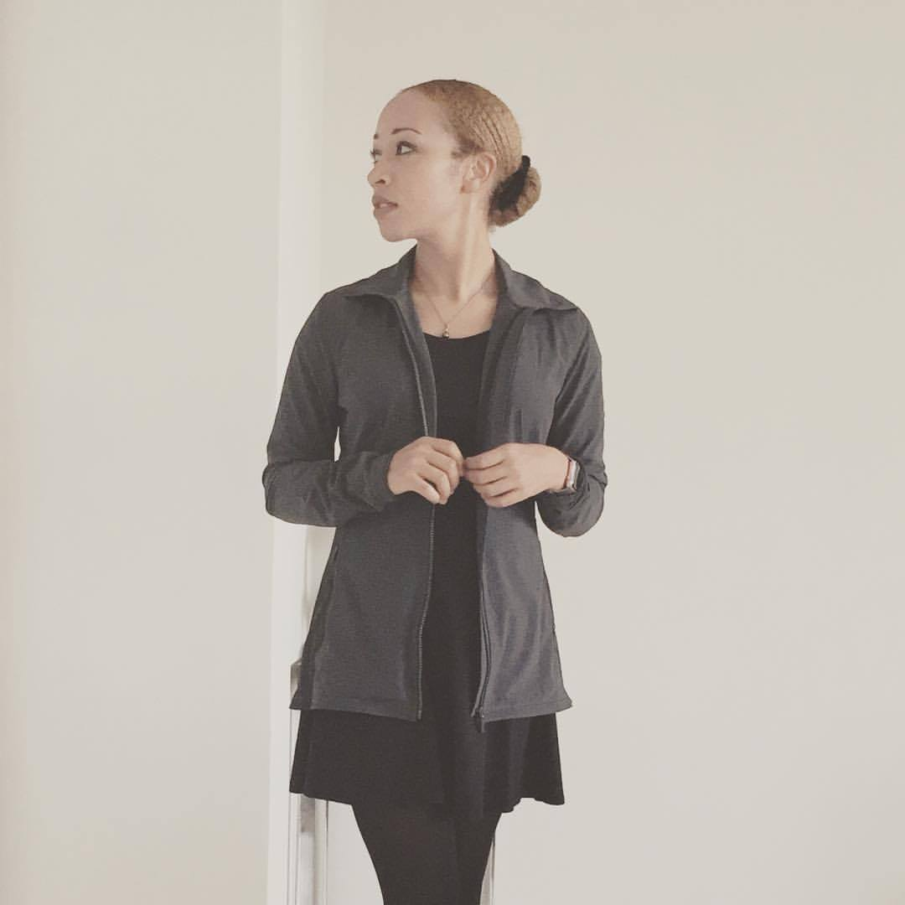

Hello
I am Anya and a Product Owner, UX Lead and UX Engineer living in Singapore. I enjoy creating innovative & inclusive digital experiences that help people and the environment.
Have a look at my work and let me know if you find it interesting.